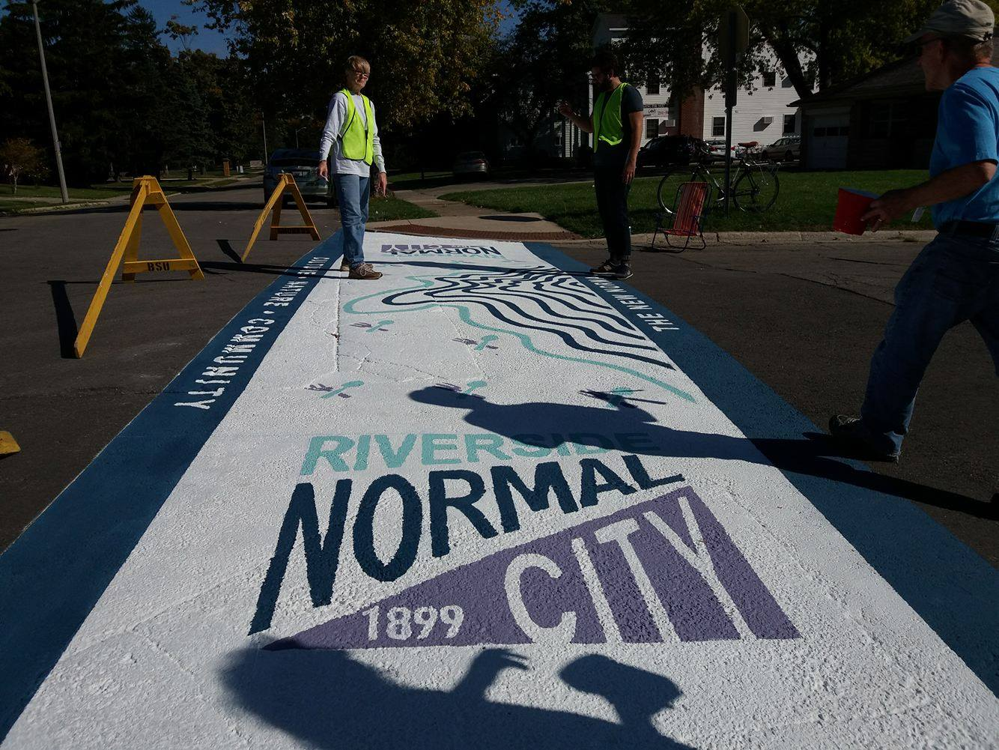

Wait
Creative Crosswalks was a project that the city of Muncie started to increase awareness of the different neighborhoods and what they have to offer in Muncie. I was a designer for Riverside Normal City Neighborhood. Working with the neighborhood association, the Ball State Architecture school, and Muncie Arts and Culture Council, we designed a logo and a crosswalk that highlighted the music venues, restaurants, and cultural offerings of the neighborhood. The project consisted of identity design and painting crosswalks in the neighborhood.
